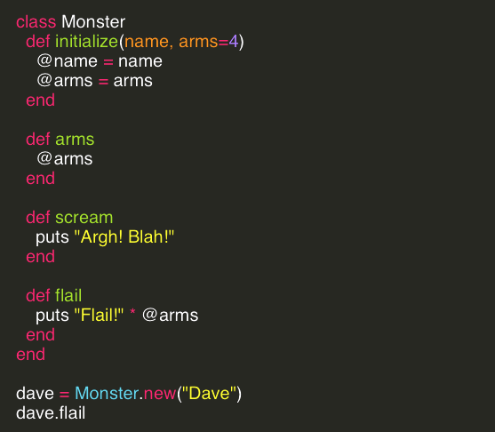

class is in session
Exploring Classes in Ruby
Thursday, April 16th, 2015
back to blog index
I’ve created a Monster! In Ruby, to illustrate classes. In The Well-Grounded Rubyist, David A. Black describes classes succinctly: “Defining a class lets you group behaviors (methods) into convenient bundles, so that you can quickly create many objects that behave essentially the same way.” Let’s do that.
We’ve defined a class called Monster. Now any object that we make of class “Monster” will have the characteristics and abilities described here. When we call Monster.new, the class "Monster" will create a new instance of the Monster class. When doing that, it calls the instance method initialize. This gives the new Monster its first traits. Here we pass in a name and a number of arms as the arguments to initialize. The method then sets those arguments to instance variables (denoted by the @ sign) that all instances of Monster will have.
You can see that arms=4. That is the default. When we call the method, if we don’t provide a different number of arms, the monster will have four arms. That makes it a better monster than one with two arms, right?
Next we can see the method arms. Instance variables have a local scope, so they can’t be viewed outside the class Monster. But this method returns the instance variable @arms, so that we could call the method outside the class, and see how many arms the monster has. Followed by "arms" we have scream. Screaming would be the first true “ability” that the monster has, and this one is quite simple; it just prints a scream. Last we have flail, which is only slightly more complicated. We use one of the instance’s variables in order to do something, which is in this case still quite simple, printing something a number of times, that being the number of arms the monster has. While simple, it illustrates the fact that instance variables can be used inside the class with other methods.
Now we’ll finally create a monster. We’ll call the variable dave even though we wouldn’t have to. It’s just for fun, we all want to enjoy this example. We could call it something plan like monster1. The monster gets it’s actual name by passing in a string when the class method new is called, here, “Dave”. As you can see, we don’t have to supply a number of arms; if we’re fine with four (as I am, I chose it as a great number!) it will default to four. Once the object is created, we could call dave.arms and see that the monster have four arms.
Here, we’ve called dave.flail to demonstrate the simple calculation involved in the method. It will print:
Flail!Flail!Flail!Flail!
This is a very simple example of classes, but that’s for a reason. It demonstrates that the concept isn’t difficult, and that classes can be used very simply to model real-world concepts. Much, much more can be done with classes, and we’ll do more as we grow as Ruby programmers. back to blog index